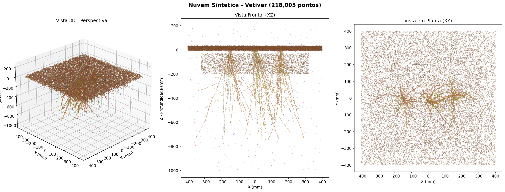

flowchart LR A["📷 Captura\nfotográfica\n(80-120 fotos)"] --> B["🔍 Feature\nExtraction\n(SIFT)"] B --> C["🔗 Feature\nMatching"] C --> D["📐 Structure\nfrom Motion"] D --> E["☁️ Nuvem de\npontos densa"] E --> F["🧹 Limpeza\n(CloudCompare)"] F --> G["✂️ Cortes\ntransversais"] G --> H["📊 Cálculo\ndo RAR"] H --> I["🛡️ Δcr e Fator\nde Segurança"]
23 Modelagem 3D de Sistemas Radiculares
23.1 Introdução à Fotogrametria Aplicada a Raízes
A quantificação da contribuição mecânica das raízes na estabilidade de taludes é um dos pilares da bioengenharia de solos. Conforme discutido nos capítulos anteriores, os modelos de Wu (Capítulo 4) e Waldron dependem fundamentalmente de dois parâmetros: a resistência à tração das raízes (\(\overline{t_R}\)) e a razão de área radicular (Root Area Ratio — RAR). Tradicionalmente, o RAR é estimado por métodos bidimensionais — análise de perfis expostos em trincheiras ou contagem de raízes em quadrículas —, que subestimam o volume radicular em 20–40% por não capturarem a distribuição tridimensional das raízes.
A fotogrametria digital Structure from Motion (SfM) representa uma alternativa acessível e precisa para superação dessas limitações (westoby2012?). A técnica permite reconstruir a geometria 3D completa de objetos a partir de múltiplas fotografias tomadas de ângulos diferentes, utilizando algoritmos de correspondência de pontos homólogos e triangulação. A Figura 23.1 ilustra o fluxo de trabalho completo, desde a captura fotográfica até a extração de parâmetros geotécnicos.
As vantagens da SfM para aplicação em bioengenharia incluem baixo custo (câmera de celular com ≥ 12 MP), portabilidade (uso direto em campo), disponibilidade de software livre (Meshroom, CloudCompare) e resolução submilimétrica (0,1–1,0 mm), suficiente para detectar raízes finas de gramíneas como o vetiver.
23.2 Preparação do Sítio Experimental
23.2.1 Critérios de Seleção
A seleção do sítio experimental deve considerar três critérios principais: vegetação de vetiver ou outra espécie de interesse estabelecida há pelo menos 6 meses (período mínimo para enraizamento funcional), inclinação do talude entre 25° e 45° (faixa crítica para erosão e instabilidade), e ausência de interferência antrópica recente. As coordenadas geográficas e um croqui do local devem ser registrados.
23.2.2 Abertura da Trincheira e Exposição das Raízes
A área de exposição é demarcada com estacas, formando um retângulo de no mínimo 50 × 50 cm ao redor da touceira selecionada. A escavação deve ser cuidadosa, mantendo as raízes íntegras, e aprofundada até a máxima extensão visível — tipicamente 60–100 cm para vetiver com mais de 12 meses. O jato de água a baixa pressão é utilizado para remover o solo aderido sem romper raízes finas.
DicaDica de Campo
Após a lavagem com jato d’água, aguarde 5–10 minutos para que as raízes sequem superficialmente antes de fotografar. Raízes secas apresentam melhor contraste com o solo, mas uma leve borrifada de água imediatamente antes da captura melhora a textura visual nas fotos.
23.2.3 Montagem da Cena
A preparação da cena para fotogrametria requer: (a) posicionamento de escala métrica (trena graduada) em duas direções perpendiculares, (b) distribuição de quatro alvos codificados ao redor da área de interesse, em posições fixas e visíveis em todas as fotos, e (c) instalação de painel de fundo neutro (lona cinza) atrás das raízes para reduzir ruído no processamento.
23.3 Aquisição Fotográfica
23.3.1 Configuração da Câmera
A câmera deve ser configurada em modo manual (M) ou prioridade de abertura (Av), com ISO 100–400, abertura f/5.6 a f/8 (para máxima profundidade de campo), velocidade ≥ 1/125 s, foco manual fixo e flash desligado. A captura deve ser realizada sob iluminação difusa (céu nublado) ou com sol baixo, evitando sombras projetadas sobre as raízes.
23.3.2 Protocolo de Captura Orbital
O protocolo de captura segue um padrão de órbitas concêntricas ao redor do sistema radicular, conforme descrito na Tabela 23.1.
| Órbita | Distância (m) | Ângulo entre fotos | Nº de fotos | Objetivo |
|---|---|---|---|---|
| 1 — Contexto | 1,0–1,5 | 10–15° | 24–36 | Cobertura 360°, visão geral |
| 2 — Média | 0,5–0,8 | 10° | 36 | Detalhamento intermediário |
| 3 — Detalhe | 0,3–0,5 | Livre | ≥ 20 | Close-ups de zonas densas |
O total mínimo é de 80 fotos (recomendado: 100–120), com sobreposição ≥ 70% entre consecutivas. Cada ponto do objeto deve ser visível em pelo menos 3 fotos de ângulos distintos, e a escala métrica deve aparecer em ≥ 50% das imagens.
23.3.3 Resolução Espacial (GSD)
A viabilidade da detecção de raízes finas depende da resolução espacial das fotos, expressa pelo Ground Sampling Distance (GSD):
\[GSD = \frac{d \times p}{f} \tag{23.1}\]
onde \(d\) é a distância câmera-objeto (m), \(p\) é o tamanho do pixel no sensor (mm) e \(f\) é a distância focal (mm). O critério adotado é \(GSD \leq d_{min}/2\), onde \(d_{min}\) é o diâmetro da menor raiz a detectar. Para raízes de vetiver (diâmetro ≈ 0,5 mm), o GSD deve ser ≤ 0,25 mm/pixel — facilmente alcançável com câmeras de 12 MP a 0,5 m de distância.
23.4 Processamento Fotogramétrico
23.4.1 Pipeline no Meshroom
O processamento é realizado no Meshroom (AliceVision), software livre de fotogrametria SfM. A pipeline padrão compreende 10 nós sequenciais (Tabela 23.2).
| Passo | Nó | Configuração |
|---|---|---|
| 1 | CameraInit | Auto-detecção |
| 2 | FeatureExtraction | Descritor SIFT, qualidade Normal |
| 3 | ImageMatching | VocabularyTree |
| 4 | FeatureMatching | Sem limite |
| 5 | StructureFromMotion | Padrão |
| 6 | DepthMapEstimation | Resolução Normal |
| 7 | DepthMapFiltering | Padrão |
| 8 | Meshing | maxPoints: 5.000.000 |
| 9 | MeshFiltering | Suavização fator 1 |
| 10 | Texturing | 4096 × 4096 |
23.4.2 Verificação de Qualidade
Após o nó StructureFromMotion, o número de câmeras calibradas deve ser ≥ 90% das fotos importadas. Se inferior a 70%, as fotos são insuficientes e deve-se retornar ao campo. O tempo de processamento varia de 30 minutos (80 fotos, GPU NVIDIA GTX 1060) a 8 horas (120 fotos, apenas CPU).
AvisoRequisito de Hardware
O Meshroom requer GPU NVIDIA com suporte CUDA para processamento em tempo razoável. Se não disponível, alternativas como COLMAP (modo CPU) ou Google Colab (GPU gratuita) podem ser utilizadas.
23.4.3 Exportação
Os produtos do processamento são a nuvem de pontos densa (formato .ply, com cores RGB) e a malha texturizada (formato .obj + .mtl + texturas .png).
23.5 Análise no CloudCompare
23.5.1 Limpeza da Nuvem de Pontos
O CloudCompare é o software utilizado para análise tridimensional. Após importação do arquivo .ply, a limpeza compreende três etapas: remoção manual de pontos do solo e fundo por segmentação poligonal (Edit → Segment), remoção estatística de outliers pelo Statistical Outlier Removal (SOR Filter, com 6 vizinhos e multiplicador 1,0–2,0), e subamostragem por espaçamento mínimo de 0,5–1,0 mm quando necessário.
23.5.2 Calibração de Escala
A escala é calibrada pela ferramenta Point Picking (Tools → Point Picking), medindo-se a distância entre dois pontos conhecidos na régua graduada e aplicando-se o fator de correção \(k = d_{real}/d_{medida}\) via Edit → Multiply/Scale nas três dimensões.
23.5.3 Visualização por Profundidade
A distribuição vertical das raízes é visualizada pela ferramenta Height Ramp (Edit → Colors → Height Ramp), com coloração no eixo Z e paleta Blue-Green-Yellow-Red (azul = superficial, vermelho = profundo). A Figura 23.2 ilustra o resultado típico.

23.6 Extração do RAR por Cortes Transversais
23.6.1 Método de Fatiamento
O RAR é o parâmetro principal extraído do modelo 3D. O procedimento consiste em fatiar horizontalmente a nuvem de pontos em camadas de 10 cm de espessura, utilizando a ferramenta Cross Section (Tools → Segmentation → Cross Section), com plano de corte XY.
Para cada fatia na profundidade \(z_i\), a nuvem é rasterizada no plano XY (Tools → Projection → Rasterize, resolução de célula = 1 mm), e o RAR é calculado como:
\[RAR(z_i) = \frac{A_{raiz}}{A_{total}} = \frac{n_{raiz} \times A_{célula}}{n_{total} \times A_{célula}} \tag{23.2}\]
onde \(n_{raiz}\) é o número de células ocupadas por raízes e \(n_{total}\) é o total de células na área delimitadora.
23.6.2 Resultados Típicos
A Tabela 23.3 apresenta valores típicos de RAR para vetiver estabelecido há 18 meses em talude rodoviário com solo argiloso tropical, obtidos por este protocolo.
| Camada (cm) | \(A_{raiz}\) (cm²) | \(A_{total}\) (cm²) | RAR (%) | \(\Delta c_r\) — Wu (kPa) |
|---|---|---|---|---|
| 0–10 | 10,0 | 2500 | 0,40 | 7,2 |
| 10–20 | 7,5 | 2500 | 0,30 | 5,4 |
| 20–30 | 5,0 | 2500 | 0,20 | 3,6 |
| 30–50 | 3,0 | 2500 | 0,12 | 2,2 |
| 50–100 | 1,25 | 2500 | 0,05 | 0,9 |
A distribuição é não linear, com concentração nas camadas superficiais: 80% do efeito mecânico ocorre nos primeiros 50 cm.
23.7 Estimativa do Acréscimo de Coesão
23.7.1 Modelo de Wu (1979)
Com os valores de RAR por camada, o acréscimo de coesão conferido pelas raízes é estimado pelo modelo de Wu:
\[\Delta c_r(z) = 1{,}2 \times \overline{t_R} \times RAR(z) \tag{23.3}\]
onde \(\overline{t_R}\) é a resistência média à tração das raízes e o fator 1,2 corrige a orientação aleatória. Para vetiver, \(\overline{t_R}\) varia entre 40 e 180 MPa (média adotada: 75 MPa).
ImportanteLimitação do Modelo de Wu
O modelo de Wu assume que todas as raízes rompem simultaneamente, o que na prática não ocorre. Estudos de (pollen2005?) demonstraram superestimação de 50–100% em relação a medições de campo. O modelo é adequado para triagem preliminar, mas projetos executivos devem utilizar o modelo de Waldron ou o modelo de fibras progressivas (FBM).
23.7.2 Modelo de Waldron (1977)
Para maior acurácia, o modelo de Waldron incorpora o ângulo de distorção da raiz (\(\theta\)) na zona de cisalhamento:
\[\Delta S = T_r \times \frac{A_r}{A_s} \times (\sin\theta + \cos\theta \tan\phi') \tag{23.4}\]
onde \(\phi'\) é o ângulo de atrito efetivo do solo. A Tabela 23.4 compara os dois modelos para os dados da Tabela 23.3.
| Modelo | \(\Delta c_r\) médio (0–30 cm) | Observação |
|---|---|---|
| Wu (1979) | 5,4 kPa | Limite superior (superestima) |
| Waldron (1977) | 3,8 kPa | Mais realista (\(\theta\) = 55°, \(\phi'\) = 25°) |
23.7.3 Fator de Segurança
O efeito do reforço radicular na estabilidade é quantificado pelo Fator de Segurança (FS), calculado pelo modelo de talude infinito:
\[FS = \frac{c' + \Delta c_r + (\gamma z \cos^2\beta - u)\tan\phi'}{\gamma z \sin\beta \cos\beta} \tag{23.5}\]
onde \(c'\) é a coesão efetiva do solo, \(\gamma\) é o peso específico, \(z\) é a profundidade da superfície de ruptura, \(\beta\) é a inclinação do talude e \(u\) é a poropressão.
Para o caso estudado (talude 1V:1,5H, solo argiloso, \(c'\) = 5 kPa, \(\phi'\) = 25°, \(\gamma\) = 18 kN/m³), o FS passou de 1,15 (solo natural) para 1,87 (solo com raízes de vetiver), um incremento de 63%.
23.8 Ensaios Complementares
Os modelos mecânicos dependem de parâmetros obtidos por ensaios complementares de laboratório (Tabela 23.5).
| Ensaio | Parâmetro | Norma |
|---|---|---|
| Tração direta de raízes | \(t_R\) (MPa) | Adaptado ASTM D3822 |
| Cisalhamento direto | \(c'\), \(\phi'\) | ABNT NBR 12770 |
| Arrancamento de raízes | \(\theta\) | Protocolo in-situ |
| Caracterização do solo | Textura, LL, LP, \(\gamma\) | ABNT NBR 6457/7181 |
23.9 Vantagens da Análise 3D sobre Métodos Convencionais
A modelagem tridimensional revela características não detectáveis pela análise 2D convencional:
Distribuição assimétrica: raízes crescem preferencialmente para baixo do talude (geotropismo combinado com gravidade), o que significa que o reforço mecânico não é uniforme ao redor da touceira.
Conexão entre touceiras: após 12 meses, raízes de touceiras vizinhas se entrelaçam, formando uma “malha viva” que distribui as tensões de cisalhamento de forma mais eficiente que raízes isoladas.
Zonas de fragilidade: entre touceiras, o solo pode permanecer desprotegido, o que reforça a recomendação de espaçamento inferior a 20 cm entre mudas.
A Tabela 23.6 compara a fotogrametria SfM com outras técnicas de imagem 3D disponíveis para análise de sistemas radiculares.
| Técnica | Resolução | Custo | Portabilidade | Ideal para |
|---|---|---|---|---|
| Fotogrametria SfM | 0,1–1 mm | Baixo | Campo | Raízes expostas em taludes |
| LiDAR terrestre | 1–5 mm | Alto | Pesado | Estruturas > 1 m |
| Tomografia (CT) | 10–50 µm | Muito alto | Laboratório | Raízes finas in-situ |
| Ressonância (MRI) | 50–200 µm | Muito alto | Laboratório | Dinâmica de água |
| Scanner 3D estruturado | 0,05–0,5 mm | Médio | Lab/campo | Amostras em bancada |
A fotogrametria SfM é a única técnica que combina portabilidade de campo, resolução submilimétrica e custo acessível, tornando-a a ferramenta ideal para laboratórios de bioengenharia em países tropicais.
DicaAplicação Prática
O protocolo descrito neste capítulo pode ser aplicado a qualquer espécie vegetal de interesse para bioengenharia. Para espécies com raízes mais finas que o vetiver (como gramíneas nativas do Cerrado), reduza a distância de captura na Órbita 3 para 0,2–0,3 m e utilize câmera com resolução ≥ 20 MP para garantir GSD ≤ 0,15 mm/pixel.